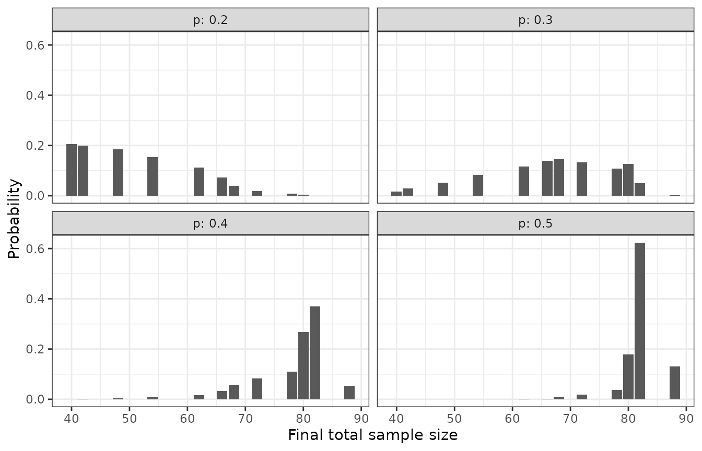

Options of the Sample Size Re-estimation
Gosuke Homma
2026-10-08
Source:vignettes/bbssr-reestimation-rules.Rmd
bbssr-reestimation-rules.RmdA reference design
At the interim analysis the blinded pooled response probability is
split into two group-specific probabilities with the assumed effect, and
the sample size is re-estimated from them. This vignette goes through
the arguments that control how this is done. They are shared by
BinaryPowerBSSR(), BinaryBSSR(),
BinaryTypeIErrorBSSR(), BinaryAlphaAdjBSSR(),
BinaryCondRejectBSSR() and
BinaryGridBSSR().
The examples use a trial with an assumed risk difference of 0.3, one-to-one allocation, a one-sided level of 0.025, a target power of 0.8 and the chi-squared test in the final analysis. The initial sample size is planned for response probabilities of 0.5 and 0.2, and the interim analysis takes place after half of it.
plan <- BinarySampleSize(p1 = 0.5, p2 = 0.2, r = 1, alpha = 0.025, tar.power = 0.8,
Test = 'Chisq')
design <- list(Delta.A = 0.3, N1 = plan$N1, N2 = plan$N2, omega = 0.5, r = 1,
alpha = 0.025, tar.power = 0.8, Test = 'Chisq')
p.true <- seq(0.2, 0.5, by = 0.1)
plan
#> Sample size for a two-arm trial with a binary endpoint
#>
#> Test : Chisq
#> Alternative : greater
#> Response rates : p1 = 0.5, p2 = 0.2
#> Allocation ratio : 1 to 1
#> Alpha : 0.025
#> Target power : 0.8
#> Exact search : crossing
#>
#> Required sample size: N1 = 39, N2 = 39, total N = 78
#> Attained power : 0.8128Exact power or the normal approximation
ss.method selects how the sample size is re-estimated
from the recovered probabilities.
-
'exact'(the default) steps from the normal approximation, one patient at a time, to the sample size at which the exact power of the test first attains the target, asBinarySampleSize()does. The argumentsearchreplaces this search by the smallest size that attains the target power or by the smallest size from which every size up to a limit attains it, see thebbssr-introductionvignette. -
'standard'uses the normal approximation with the variance under the null hypothesis in the term of the significance level and the variance under the alternative in the term of the power, formula (21.3) of Kieser (2020). -
'null.variance'uses the variance under the null hypothesis in both terms, formula (1) of Friede and Kieser (2004). -
'alternative.variance'uses the variance under the alternative in both terms. With a non-inferiority margin this is the formula of Blackwelder (1982), see thebbssr-non-inferiorityvignette.
The bbssr-statistical-methods vignette gives the
formulas. The table below shows the final total sample size that each
method gives for every fourth value of the pooled number of interim
responders s.
methods <- c('exact', 'standard', 'null.variance')
fits <- lapply(methods, function(m) {
do.call(BinaryPowerBSSR, c(design, list(p = p.true, Delta.T = 0.3, ss.method = m)))
})
names(fits) <- methods
final.total <- function(fit) {
map <- attr(fit, 'reestimation')
map$N1 + map$N2
}
map <- attr(fits$exact, 'reestimation')
by.method <- data.frame(s = map$s, hat.p = round(map$hat.p, 3),
hat.p1 = round(map$hat.p1, 3), hat.p2 = round(map$hat.p2, 3),
exact = final.total(fits$exact),
standard = final.total(fits$standard),
null.variance = final.total(fits$null.variance))
by.method[seq(1, nrow(by.method), by = 4), ]
#> s hat.p hat.p1 hat.p2 exact standard null.variance
#> 1 0 0.0 0.15 0.00 72 40 40
#> 5 4 0.1 0.25 0.00 42 40 40
#> 9 8 0.2 0.35 0.05 48 54 56
#> 13 12 0.3 0.45 0.15 68 72 74
#> 17 16 0.4 0.55 0.25 80 82 84
#> 21 20 0.5 0.65 0.35 88 86 88
#> 25 24 0.6 0.75 0.45 80 82 84
#> 29 28 0.7 0.85 0.55 68 72 74
#> 33 32 0.8 0.95 0.65 48 54 56
#> 37 36 0.9 1.00 0.75 42 40 40
#> 41 40 1.0 1.00 0.85 72 40 40The exact search uses the exact power of the chosen test, so it
depends on the test of the final analysis, whereas the two formulas do
not. At the lowest interim outcomes the recovered probability of group 2
would be negative, and at the highest that of group 1 would exceed one.
The exact search needs probabilities inside the unit interval and
truncates them to it, which is what the columns hat.p1 and
hat.p2 show. The truncation shrinks the recovered
difference, which is why the exact column rises again at both ends. The
formulas use the recovered probabilities before truncation, with each
Bernoulli variance truncated at zero, so that the assumed difference is
kept as in formula (2) of Friede and Kieser (2004).
The power and the expected total sample size of the three versions are as follows.
data.frame(
p = p.true,
power.exact = round(fits$exact$power.BSSR, 4),
power.standard = round(fits$standard$power.BSSR, 4),
power.null.variance = round(fits$null.variance$power.BSSR, 4),
E.N.exact = round(fits$exact$E.N, 1),
E.N.standard = round(fits$standard$E.N, 1),
E.N.null.variance = round(fits$null.variance$E.N, 1)
)
#> p power.exact power.standard power.null.variance E.N.exact E.N.standard
#> 1 0.2 0.7875 0.8138 0.8244 50.6 54.3
#> 2 0.3 0.7784 0.7984 0.8058 67.5 70.3
#> 3 0.4 0.7936 0.8031 0.8089 78.5 80.4
#> 4 0.5 0.8023 0.8037 0.8006 81.9 83.7
#> E.N.null.variance
#> 1 56.3
#> 2 72.4
#> 3 82.6
#> 4 86.2Another test or level for the re-estimation
By default the sample size is re-estimated with the test and the
level of the final analysis. ss.Test gives another test for
the exact search, and ss.alpha another level. A final
analysis with the Boschloo test can, for example, re-estimate the sample
size with the exact power of the chi-squared test, which is quicker to
search over. The chi-squared test does not keep the nominal level and
attains the target power with fewer patients than the Boschloo test, so
the sizes it gives are smaller, and the power of the Boschloo test falls
further below the target, as the table shows.
boschloo <- modifyList(design, list(Test = 'Boschloo'))
fit.boschloo <- do.call(BinaryPowerBSSR, c(boschloo, list(p = p.true, Delta.T = 0.3)))
fit.chisq <- do.call(BinaryPowerBSSR,
c(boschloo, list(p = p.true, Delta.T = 0.3, ss.Test = 'Chisq')))
data.frame(
p = p.true,
power.ss.Boschloo = round(fit.boschloo$power.BSSR, 4),
power.ss.Chisq = round(fit.chisq$power.BSSR, 4),
E.N.ss.Boschloo = round(fit.boschloo$E.N, 1),
E.N.ss.Chisq = round(fit.chisq$E.N, 1)
)
#> p power.ss.Boschloo power.ss.Chisq E.N.ss.Boschloo E.N.ss.Chisq
#> 1 0.2 0.7946 0.7587 55.9 50.6
#> 2 0.3 0.7809 0.7577 71.2 67.5
#> 3 0.4 0.7943 0.7780 82.2 78.5
#> 4 0.5 0.7925 0.7617 86.5 81.9ss.alpha matters when the final analysis uses an
adjusted level. BinaryAlphaAdjBSSR() with
adjust = 'test' lowers the level of the final analysis
only, so the re-estimation keeps ss.alpha, and with
adjust = 'both' it lowers both, see the
bbssr-type1-error vignette.
Whole numbers
The normal approximation gives an unrounded sample size, and
rounding turns it into whole numbers.
-
'group'(the default) rounds up the size of group 2 and gives group 1ceiling(r * N2)patients. It is the only rule available withss.method = 'exact'. -
'friede-kieser'gives the second stage the rounded-up excess of the unrounded total over the interim total, split intoceiling(n / (1 + r))andceiling(r * n / (1 + r))patients as in Friede and Kieser (2004). -
'total'rounds up the total and gives group 2floor(N / (1 + r))patients. -
'nearest'rounds each group to the nearest whole number, as in Farrington and Manning (1990).
With an allocation ratio of 2 to 1 the four rules give the following final sample sizes for one interim outcome.
rounding.rules <- c('group', 'friede-kieser', 'total', 'nearest')
do.call(rbind, lapply(rounding.rules, function(rule) {
b <- BinaryBSSR(n1 = 30, n2 = 15, S = 18, Delta.A = 0.25, r = 2, alpha = 0.025,
tar.power = 0.8, Test = 'Chisq', ss.method = 'standard',
rounding = rule)
data.frame(rounding = rule, N1.final = b$N1.final, N2.final = b$N2.final,
N.final = b$N.final)
}))
#> rounding N1.final N2.final N.final
#> 1 group 88 44 132
#> 2 friede-kieser 87 44 131
#> 3 total 87 43 130
#> 4 nearest 86 43 129Bounds on the final sample size
The final total sample size is never smaller than the interim total.
Three arguments add further bounds. restricted = TRUE keeps
the initial sample size as a lower bound, so the trial can only grow.
N.min is a lower bound on the total, which can keep the
patients who are already enrolled but not yet evaluated at the interim
analysis. N.max is an upper bound on the total. Below it is
set to the initial total, so that the trial can only shrink, which is
the mirror image of the restricted rule. Under the rounding rules
'friede-kieser' and 'nearest', which round the
two groups separately, the total can exceed N.max by one
patient.
bounds <- list(unrestricted = list(), restricted = list(restricted = TRUE),
capped = list(N.max = plan$N))
do.call(rbind, lapply(names(bounds), function(nm) {
fit <- do.call(BinaryPowerBSSR, c(design, list(p = p.true, Delta.T = 0.3,
ss.method = 'standard'),
bounds[[nm]]))
s <- summary(fit)
data.frame(rule = nm, p = s$p, power.BSSR = round(fit$power.BSSR, 4),
E.N = round(s$E.N, 1), N.q50 = s$N.q50, P.N.max = round(s$P.N.max, 3))
}))
#> rule p power.BSSR E.N N.q50 P.N.max
#> 1 unrestricted 0.2 0.8138 54.3 54 0.000
#> 2 unrestricted 0.3 0.7984 70.3 72 0.010
#> 3 unrestricted 0.4 0.8031 80.4 82 0.165
#> 4 unrestricted 0.5 0.8037 83.7 84 0.381
#> 5 restricted 0.2 0.9509 78.0 78 0.000
#> 6 restricted 0.3 0.8543 78.7 78 0.010
#> 7 restricted 0.4 0.8111 81.7 82 0.165
#> 8 restricted 0.5 0.8047 83.9 84 0.381
#> 9 capped 0.2 0.8138 54.3 54 0.012
#> 10 capped 0.3 0.7962 69.6 72 0.287
#> 11 capped 0.4 0.7803 76.7 78 0.801
#> 12 capped 0.5 0.7768 77.9 78 0.970P.N.max is the probability that the final total takes
the largest value that any interim outcome leads to. When the cap binds,
this is the probability of ending at the cap, or one patient below it
when the cap cannot be split in the ratio r to 1.
Interim sample sizes
omega gives the interim analysis as a fraction of the
initial sample size. Group 2 then has ceiling(omega * N2)
patients at the interim analysis and group 1 has
ceiling(r * ceiling(omega * N2)), so the interim analysis
keeps the allocation ratio. n.interim gives the two interim
sample sizes directly instead, for example when the interim analysis is
triggered by a number of evaluated patients.
c(n1.interim = attr(fits$exact, 'n1.interim'),
n2.interim = attr(fits$exact, 'n2.interim'))
#> n1.interim n2.interim
#> 20 20
fit.interim <- do.call(BinaryPowerBSSR,
c(modifyList(design, list(omega = NULL)),
list(p = p.true, Delta.T = 0.3, n.interim = c(20, 15))))
c(n1.interim = attr(fit.interim, 'n1.interim'),
n2.interim = attr(fit.interim, 'n2.interim'))
#> n1.interim n2.interim
#> 20 15Risk ratio and odds ratio
The assumed effect Delta.A and the true effect
Delta.T are risk differences by default. With
effect = 'RR' they are risk ratios p1 / p2,
and the recovered probabilities are those with the pooled value
and the ratio Delta.A, formula (21.11) of Kieser (2020).
With effect = 'OR' they are odds ratios, and the recovered
probabilities are obtained from the quadratic equation that the odds
ratio and the pooled value define. The same interim data give the
following recovered probabilities and re-estimated sample sizes on the
three scales.
effects <- data.frame(effect = c('RD', 'RR', 'OR'), Delta.A = c(0.2, 2.5, 3),
stringsAsFactors = FALSE)
do.call(rbind, lapply(seq_len(nrow(effects)), function(i) {
b <- BinaryBSSR(n1 = 20, n2 = 20, S = 12, Delta.A = effects$Delta.A[i], r = 1,
alpha = 0.025, tar.power = 0.8, Test = 'Chisq',
effect = effects$effect[i])
data.frame(effect = effects$effect[i], Delta.A = effects$Delta.A[i],
hat.p = b$hat.p, hat.p1 = round(b$hat.p1, 4), hat.p2 = round(b$hat.p2, 4),
N.re = b$N.re)
}))
#> effect Delta.A hat.p hat.p1 hat.p2 N.re
#> 1 RD 0.2 0.3 0.4000 0.2000 160
#> 2 RR 2.5 0.3 0.4286 0.1714 96
#> 3 OR 3.0 0.3 0.4112 0.1888 130Distribution of the final sample size
BinaryPowerBSSR() reports the expected final total
sample size E.N. summary() adds its standard
deviation, its quartiles and the probability that it reaches the largest
attainable value, and the attribute N.dist holds the whole
distribution for every scenario.
summary(fits$exact)
#> p1 p2 p E.N SD.N N.q25 N.q50 N.q75 P.N.max
#> 1 0.35 0.05 0.2 50.58920 10.156191 42 48 62 2.145897e-06
#> 2 0.45 0.15 0.3 67.48905 10.782479 62 68 78 2.567452e-03
#> 3 0.55 0.25 0.4 78.52342 6.195798 78 80 82 5.358597e-02
#> 4 0.65 0.35 0.5 81.92035 3.289272 82 82 82 1.315918e-01
n.dist <- attr(fits$exact, 'N.dist')
head(n.dist)
#> scenario p N1 N2 N prob
#> 1 1 0.2 20 20 40 0.20553366
#> 2 1 0.2 21 21 42 0.20020920
#> 3 1 0.2 24 24 48 0.18408246
#> 4 1 0.2 27 27 54 0.15362938
#> 5 1 0.2 31 31 62 0.11309921
#> 6 1 0.2 33 33 66 0.07228451
ggplot(n.dist, aes(x = N, y = prob)) +
geom_col() +
facet_wrap(~ p, labeller = label_both) +
labs(x = 'Final total sample size', y = 'Probability') +
theme_bw()
References
Blackwelder, W. C. (1982). “Proving the null hypothesis” in clinical trials. Controlled Clinical Trials, 3, 345-353.
Farrington, C. P. and Manning, G. (1990). Test statistics and sample size formulae for comparative binomial trials with null hypothesis of non-zero risk difference or non-unity relative risk. Statistics in Medicine, 9, 1447-1454.
Friede, T. and Kieser, M. (2004). Sample size recalculation for binary data in internal pilot study designs. Pharmaceutical Statistics, 3, 269-279.
Kieser, M. (2020). Methods and Applications of Sample Size Calculation and Recalculation in Clinical Trials. Springer.